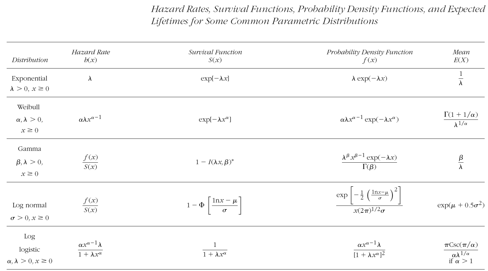
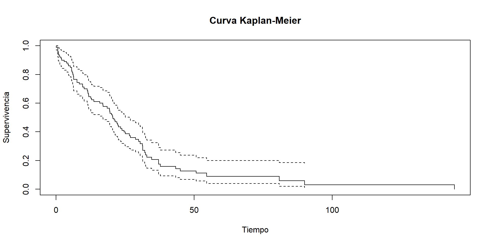

| time | event |
|---|---|
| 16.8691452 | 0 |
| 11.5322054 | 1 |
| 26.5810974 | 1 |
| 0.6315472 | 1 |
| 1.1242195 | 1 |
| 6.3300243 | 1 |
| 6.2845458 | 0 |
| 2.9053361 | 1 |
Introducción al Análisis de Supervivencia
2025-06-01
Análisis de Supervivencia
Introducción y Objetivos
- Relevancia de la confiabilidad en contextos biomédicos, industriales y económicos
- Objetivos de la sesión (2 horas):
- Comprender conceptos clave: tiempo de falla, funciones de supervivencia y riesgo
- Mecanismos de censura y truncamiento
- Modelos de supervivencia básicos y estimación en R
- Aplicaciones prácticas con ejemplos de datos reales
Agenda
- Definición y ejemplos de tiempos de falla (20 min)
- Función de supervivencia y función de riesgo (30 min)
- Censura y truncamiento (20 min)
- Estimación no paramétrica: Kaplan-Meier en R (30 min)
- Modelos paramétricos y discusión de sistemas reparables (20 min)
1. ¿Qué es el análisis de supervivencia?
Análisis de Supervivencia
es el análisis estadístico de tiempos hasta la ocurrencia de un evento.
También se conoce como análisis de time-to-event.
Más precisamente, estudia el tiempo transcurrido entre dos eventos:
- Un evento de inicio
- Un evento de fin
Símbolo usual: \(T\)
→ Variable aleatoria no negativa que representa el tiempo hasta el evento.
Términos comunes:
- Tiempo de falla
- Tiempo de vida
- Tiempo de supervivencia
¿Dónde se aplica el análisis de supervivencia?
Aplicaciones comunes
- Biomédicas
- Tiempo hasta recaída, muerte, recuperación o aparición de una enfermedad.
- Industriales
- Duración de dispositivos, tiempo hasta la primera falla.
- Económicas / financieras
- Tiempo en desempleo, tiempo hasta bancarrota, duración de relaciones laborales.
Nota: El “tiempo” puede medirse en días, semanas, kilómetros, horas de operación, etc.
Naturaleza de los datos de supervivencia
- Los datos de tiempo a evento son realizaciones de variables aleatorias no negativas.
- Pueden ser:
- Continuos: como tiempo en días, semanas, horas.
- Discretos: como número de visitas o ciclos.
Ejemplo de variable de interés:
\[
T = \text{Tiempo entre el ingreso al hospital y la recuperación}
\]
¿Qué se necesita definir para analizar tiempos de falla?
Para interpretar adecuadamente los datos, es necesario:
1. Evento de origen
→ ¿Desde cuándo empieza a contarse el tiempo?
2. Escala de medición
→ ¿Cómo se mide el tiempo? (reloj, kilómetros, ciclos)
3. Evento de fin
→ ¿Qué se considera “fallo”, “recuperación”, o “evento”?
Ejemplos prácticos
Ejemplo biomédico – Ensayo clínico:
- Evento de origen: entrada del paciente al estudio
- Evento de fin: muerte o recuperación
- Escala: tiempo en semanas
Ejemplo industrial – Billetes:
- Evento de origen: salida a circulación
- Evento de fin: destrucción por deterioro
- Escala: tiempo calendario o número de transacciones
Ejemplo financiero – Desempleo:
- Evento de origen: pérdida de empleo
- Evento de fin: contratación nueva
- Escala: meses sin empleo
Ejemplos de datos de supervivencia
A continuación se presentan algunos ejemplos de datos de supervivencia. Estos ejemplos fueron obtenidos de Klein & Moeshberger (1997).
Ejemplo de Duración de la remisión en un ensayo clínico para leucemia aguda
Duración de remisión de un ensayo clínico para leucemia aguda. Resultados de un ensayo clínico en donde se quería compara la efectividad de la droga \(6-MP\) versus placebo en 42 niños con leucemia aguda. El evento de inicio es remisión parcial de la enfermedad después de haber sido tratados con la droga prednisone. El evento de fin es recaída o muerte. La escala de medición es tiempo calendario en meses. Algunos individuos no presentaron el evento de fin al término del estudio. Estos casos son marcados con un + y son llamados censurados por la derecha. Más adelante los veremos con detalle.

Ejemplo de Transplante de médula ósea en pacientes con leucemia.
Transplante de médula es un procedimiento estándar en pacientes con leucemia aguda. La recuperación después del transplante es un proceso complejo. La prognosis para la recuperación puede depender de factores que se conocen al momento del transplante, como edad y sexo del paciente y donador, etapa de la enfermedad inicial, tiempo entre el diagnóstico y el transplante, etc. La prognosis final depende de cómo evoluciona el paciente después del transplante. Puede generar aversión o rechazo de la medula transplantada (GVHD), que el conteo de plaquetas se vuelva normal o desarrollar infecciones, etc. El transplante se considera fracaso cuando el paciente recae o muere.
Ejemplo de Transplante de médula ósea en pacientes con leucemia. (cont.)

Ejemplo Tiempos de muerte de adultos mayores residentes de un asilo.
Channing House es una casa de retiro en California. Datos con las edades de muerte de 462 individuos (97 hombres y 365 mujeres) que estuvieron en la residencia durante el periodo de enero de 1964 y julio de 1975. Se reportó la edad a la muerte o al momento en que se salían del asilo (en meses) y la edad a la que los individuos entraron al asilo. Estos datos son un ejemplo de truncamiento por la izquierda que más adelante veremos con detalle. Un individuo tiene que sobrevivir lo suficiente para estar en edad de entrar al asilo. Individuos que mueren previamente a la edad de retiro son excluidos del estudio.
Ejemplo Tiempo al primer uso de marihuana.
En este estudio a 191 estudiantes de preparatoria se les preguntó: ¿Cuál fue la primera vez que probaste la marihuana?. Las respuestas fueron, “la edad exacta a la que la probaron”, “nunca la he probado”, y “la probé pero no recuerdo cuando fue la primera vez”. En este último caso tenemos una censura por la izquierda. El evento de interés ha ocurrido en algún momento previo a la edad actual del estudiante!.

Tiempo a desarrollar sida.
Se reportan datos con tiempos de infección y de inducción para 258 adultos y 37 niños que fueron infectados con el virus del VIH y desarrollaron sida antes del 30 de junio de 1986. Los datos consisten de los tiempos (en años) desde que adultos fueron infectados por el virus por transfusión de sangre contaminada, y el tiempo de espera hasta el desarrollo de sida. Para la población pediátrica, los niños fueron infectados en útero o al nacer. El tiempo base de medición es el 1 de abril de 1978. En este estudio, sólo los individuos que han desarrollado sida antes del término del estudio son considerados. Individuos que no han desarrollado sida no son incluidos en el estudio. Este tipo de datos es llamado truncados por la derecha y más adelante los veremos con detalle.
Tiempo de inducción de SIDA en adultos y niños
| Infection Time | Adult Induction Time | Child Induction Time |
|---|---|---|
| 0.00 | 5 | |
| 0.25 | 6.75 | |
| 0.75 | 5, 5, 7.25 | |
| 1.00 | 4.25, 5.75, 6.25, 6.5 | 5.5 |
| 1.25 | 4, 4.25, 4.75, 5.75 | |
| 1.50 | 2.75, 3.75, 5, 5.5, 6.5 | 2.25 |
| 1.75 | 2.75, 3, 5.25, 5.25 | |
| 2.00 | 2.25, 3, 4, 4.5, 4.75, 5, … | |
| 2.25 | 3, 5.5 | 3 |
| 2.50 | 2.25, 2.25, …, 4 | |
| 2.75 | 1.25, 1.5, …, 5.25 | 1 |
| 3.00 | 2, 3.25, …, 5 | 1.75 |
| 3.25 | 1.25, 1.75, …, 4.5 | |
| 3.50 | 1.25, 2.25, …, 4.5 | 0.75 |
| 3.75 | 1.25, 1.75, …, 4.25 | 0.75, 1, …, 4.25 |
| 4.00 | 1, 1.5, …, 4 | 1 |
| 4.25 | 1.25, 1.5, …, 3.5 | 1.75 |
| 4.50 | 1, 1.5, …, 3.25 | 3.25 |
| 4.75 | 1, 1.5, …, 3.25 | 1, 2.25 |
| 5.00 | 0.5, 1.5, …, 3 | 0.5, 0.75, 1.5, 2.5 |
| 5.25 | 0.25, 0.25, …, 2.75 | 0.25, 1, 1.5 |
| 5.50 | 1, 1, …, 2.5 | 0.5, 1.5, 2.5 |
| 5.75 | 0.25, 0.75, …, 2.25 | 1.75 |
| 6.00 | 0.5, 0.75, …, 2 | 0.5, 1.25 |
| 6.25 | 0.75, 1, …, 1.75 | 0.5, 1.25 |
| 6.50 | 0.25, 0.25, …, 1.5 | 0.75 |
| 6.75 | 0.75, 0.75, …, 1.25 | 0.5, 0.75 |
| 7.00 | 0.75 | 0.75 |
| 7.25 | 0.25 | 0.25 |
Ejemplos de Datos de Supervivencia
2. Funciones fundamentales en análisis de supervivencia
En análisis de supervivencia, las variables aleatorias de interés \(T\) son no negativas, y se caracterizan no solo por \(f(t)\) o \(F(t)\), sino también por funciones más interpretables:
- \(S(t)\): función de supervivencia
- \(h(t)\): función de riesgo o tasa de falla
- \(H(t)\): riesgo acumulado
Función de Supervivencia
\(S(t) = P(T > t) = 1 - F(t)\)
Representa la probabilidad de sobrevivir más allá del tiempo \(t\).
Propiedades clave:
- Monótona no creciente
- \(S(0) = 1\), \(\lim_{t \to \infty} S(t) = 0\)
Función de Riesgo
\(h(t) = \frac{f(t)}{S(t)}\)
- También conocida como:
- Tasa de falla condicional (confiabilidad)
- Tasa de mortalidad (demografía)
- Función de intensidad (procesos estocásticos)
Interpretación:
Tasa instantánea de ocurrencia del evento, dado que se ha sobrevivido hasta \(t\).
Ejemplos de formas de riesgo
- Riesgo creciente → envejecimiento
- Riesgo decreciente → rejuvenecimiento
- Riesgo tipo “tina de baño” → mortalidad neonatal y senil
- Riesgo tipo “montaña” → recaída tras tratamiento

Otra forma de visualización
Riesgo en tiempo discreto
Para \(T\) discreta con soporte \(\{u_1, u_2, \dots\}\):
\[ h(t) = P(T = t \mid T \ge t) \]
\[ h_k = \frac{P(T = u_k)}{P(T \ge u_k)} = \frac{f(u_k)}{S(u_{k-1})} \]
Usando \(f(u_k) = S(u_{k-1}) - S(u_k)\), se obtiene:
\[ h_k = 1 - \frac{S(u_k)}{S(u_{k-1})} \]
Relaciones discretas clave
Función de supervivencia:
\[ S(t) = \prod_{u_k \le t} (1 - h_k) \]
Función de densidad:
\[ f(u_j) = h_j \prod_{k<j} (1 - h_k) \]
En demografía, \(h(t)\) representa la probabilidad de morir en el momento \(t\) dado que se ha sobrevivido hasta \(t\).
Ejemplos de riesgo discreto

Riesgo acumulado discreto
Dos definiciones equivalentes:
Suma directa: \[ H(t) = \sum_{u_k \le t} h_k \]
Log-transformación: \[ H(t) = - \sum_{u_k \le t} \log(1 - h_k) \]
Ambas son monótonas no decrecientes.
Riesgo en tiempo continuo
\[ h(t) = \lim_{\varepsilon \to 0} \frac{1}{\varepsilon} P(t < T \le t + \varepsilon \mid T \ge t) = \frac{f(t)}{S(t)} \]
Como \(F(t) = 1 - S(t)\), entonces:
\[ h(t) = -\frac{d}{dt} \log S(t) \]
Al integrar:
\[ \log S(t) = -\int_0^t h(u) \, du \]
\[ S(t) = \exp\left(-\int_0^t h(u) \, du\right) \]
\(h(t)\varepsilon\) es la probabilidad aproximada de que un evento ocurra en el siguiente instante dado que el individuo ha sobrevivido hasta \(t\).
Riesgo acumulado continuo
\[ H(t) = \int_0^t h(u)\, du \qquad\Rightarrow\qquad S(t) = \exp\{-H(t)\} \]
Si \(S(\infty) = 0\), entonces \(H(\infty) = \infty\).
Visualización de funciones

Censura y truncamiento
¿Qué es la censura?
- La censura ocurre cuando no se observa completamente el tiempo de fallo.
- Es común en estudios longitudinales, donde algunos individuos:
- No han fallado al final del estudio,
- Ingresan tarde al seguimiento,
- O se pierde el seguimiento.
Tipos de censura:
- Por la derecha: solo sabemos que el evento ocurrió después de cierto tiempo.
- Por la izquierda: solo sabemos que ocurrió antes de cierto tiempo.
- Por intervalo: solo sabemos que ocurrió entre dos tiempos.
¿Qué es el truncamiento?
- El truncamiento ocurre cuando ciertas observaciones nunca se registran debido al diseño del estudio.
Ejemplos:
- Truncamiento por la izquierda: sólo se incluyen individuos cuyo evento ocurre después de cierto punto.
- Truncamiento por la derecha: se excluyen individuos cuyo evento ocurre después de cierto punto.
Implicación:
- Afecta quién entra al estudio (selección), no solo cómo se mide el tiempo.
üîç Notas para el instructor:
- Puedes acompañar esta diapositiva con una gráfica tipo línea de tiempo que contraste censura vs truncamiento (e.g. tipo Klein & Moeschberger).
- Si se quiere profundizar, añade en otra diapositiva cómo afectan a la función de verosimilitud.
- Si el público es nuevo en supervivencia, considera ilustrar con ejemplos cotidianos:
- Censura: “no sabemos cuándo murió un paciente, solo que estaba vivo al final del estudio”.
- Truncamiento: “personas que murieron antes de entrar al estudio no están en el conjunto de datos”.
Tipos de censura por la derecha
¿Cómo se genera la censura?
En estudios de supervivencia, es común que no se observe completamente el tiempo de falla. Esto ocurre mediante distintos mecanismos:
- Censura tipo I
- Censura tipo II
- Censura aleatoria
Censura tipo I
Definición:
Se observa el tiempo de supervivencia \(T_i\) solo si ocurre antes de un tiempo de censura predeterminado \(C_i\).
Si \(T_i > C_i\), entonces el dato está censurado.
Notación formal:
- Observamos el par \((t_i, \delta_i)\), donde
- \(t_i = \min(T_i, C_i)\)
- \(\delta_i = I(T_i \le C_i)\)
- \(t_i = \min(T_i, C_i)\)
- Si \(\delta_i = 1\): observación completa
- Si \(\delta_i = 0\): censura por la derecha

Ejemplo de censura tipo I
En un estudio toxicológico, ratones reciben un carcinógeno.
Se observa su supervivencia hasta cierto tiempo límite.
Los ratones aún vivos en ese punto son sacrificados (censurados).
Importante: Puede haber múltiples tiempos de censura, dependiendo del diseño experimental.
Censura tipo I generalizada
Cada individuo entra en un momento distinto al estudio, pero el final del estudio está predeterminado.
- Cada sujeto tiene su propio tiempo de censura fijo.
- Este diseño genera censura tipo I generalizada.

Censura tipo II
Definición:
El estudio se detiene al observar la falla de los primeros \(r < n\) sujetos.
- Se observan los tiempos \(T_{(1)}, T_{(2)}, \dots, T_{(r)}\)
- Los \(n - r\) sujetos restantes están censurados.
Notación:
- Tiempo de censura común: \(C = T_{(r)}\)
- Censura si \(T_i > C\)
Aplicación típica: pruebas de resistencia de equipos que se detienen al fallar cierto número de unidades.
Ejemplo: Se prueban 20 motores, pero se termina el estudio tras la falla de los primeros 10.
Censura aleatoria
Definición:
El tiempo de censura \(C_i\) es una variable aleatoria, diferente para cada individuo.
Ejemplos comunes:
- Salida del estudio
- Muerte por otra causa
- Migración o pérdida de contacto
- Hospital deja de aceptar al paciente
Ejemplo aplicado:
En estudios con pacientes de diálisis, el evento de interés puede ser fallas por infección, pero se censura por muerte o salida del hospital.
Tipos de censura aleatoria
- No informativa: \(C_i \perp T_i\)
→ tratable como censura tipo I - Informativa: \(C_i\) depende de \(T_i\)
→ requiere modelos avanzados
Conclusión
- La censura por la derecha se clasifica según su origen: planificado, condicional o aleatorio.
- Es fundamental para construir correctamente la función de verosimilitud.
- Un mal manejo de la censura puede sesgar estimaciones.
Censura por la izquierda e intervalo
¿Qué es la censura por la izquierda?
- Ocurre cuando el evento de interés sucede antes de un tiempo de observación conocido.
- Es decir, sabemos que el evento ya ocurrió, pero no cuándo exactamente.
Definición formal:
Sea \(C_l\) el tiempo de censura por la izquierda y \(T_i\) el tiempo de falla.
- Si \(T_i \ge C_l\): observación completa.
- Si \(T_i < C_l\): censura por la izquierda.
Notación:
\[
t_i = \max(T_i, C_l), \quad
\delta_i = I(T_i \ge C_l)
\]
Ejemplo 1
Adolescente declara:
“Sí consumí marihuana, pero no recuerdo cuándo”.
→ El evento ocurrió antes de su edad actual, pero se desconoce el momento exacto.
Ejemplo 2
Un niño ya sabe realizar una tarea cuando entra al estudio.
→ El aprendizaje ocurrió antes de la observación inicial.
Censura doble (izquierda y derecha)
Definición:
Una observación está doblemente censurada si se desconoce si el evento ocurrió antes o después de un cierto rango.
- Combina censura por la izquierda y la derecha.
- Común en estudios transversales o con límites temporales de observación.
Notación generalizada:
\[ t_i = \max\{ \min(T_i, C_r), C_l \}, \quad \delta_i = \begin{cases} 1, & \text{tiempo exacto} \\ 0, & \text{censura por la derecha} \\ -1, & \text{censura por la izquierda} \end{cases} \]
Ejemplo 1 – Marihuana
“Nunca la he usado” → censura por la derecha
“Sí la usé pero no recuerdo cuándo” → izquierda
“La usé a los 15” → observación completa
Ejemplo 2 – Aprendizaje infantil
Algunos niños no aprenden durante el estudio → censura por la derecha
Otros ya sabían antes de iniciar → censura por la izquierda
Comparación gráfica sugerida
(Agregar una figura como la siguiente para reforzar visualmente)
| Tipo de observación | Línea de tiempo |
|---|---|
| Exacta | Evento ocurre entre observación inicial y final |
| Censura por la derecha | Línea que termina sin evento registrado |
| Censura por la izquierda | Línea que empieza con evento ya ocurrido |
| Doble censura | Solo se sabe que el evento ocurrió fuera del intervalo de observación |
Recomendaciones
- Identificar con claridad el momento de entrada al estudio y el horizonte de observación.
- Siempre registrar si se trata de censura por la izquierda, derecha o ambas.
- Verificar si la censura es informativa o no informativa.
Censura por intervalo
¿Qué es la censura por intervalo?
- La censura por intervalo ocurre cuando el evento sucede entre dos visitas clínicas, pero no se conoce el momento exacto.
Interpretación:
Se sabe que el sujeto no había fallado antes del tiempo \(L_i\), pero sí lo ha hecho antes o en el tiempo \(R_i\).
Notación formal:
\[ L_i < T_i \le R_i \]
Donde:
- \(L_i\) = última vez que se observó sin evento
- \(R_i\) = primera vez que se detecta el evento
Puedes pensar esta censura como una observación con ventana de tiempo, en la que el evento ocurre dentro de un intervalo que puede variar por sujeto.
Posibles causas:
- Visitas clínicas programadas
- Limitaciones de seguimiento continuo
Ejemplo 1 – Estudio del Corazón de Framingham
En este estudio longitudinal, los eventos de enfermedad coronaria (CHD) pueden registrarse con precisión.
Sin embargo:
- La aparición de angina de pecho se detecta solo entre dos visitas clínicas, con varios años de diferencia.
→ El tiempo exacto es desconocido, pero ocurrió dentro del intervalo entre exámenes.
Ejemplo 2 – Estudio de radioterapia
Se estudió el efecto cosmético en mujeres con cáncer de mama tras radioterapia (con o sin quimioterapia).
- Se realizaron controles cada 4 a 6 meses, luego más espaciados.
- El evento de interés: retracción severa del seno.
- Solo se sabía si ocurrió entre dos visitas, o si nunca se observó (censura por la derecha).
→ Algunas pacientes presentaron censura por intervalo, y otras, por la derecha.
Consideraciones finales
- La censura por intervalo requiere un tratamiento especial en modelos de supervivencia:
- No puede tratarse como observación exacta ni como censura por la derecha.
- Métodos como EM, modelos de verosimilitud para intervalos, o análisis de datos agrupados son apropiados.
Truncamiento
¿Qué es el truncamiento?
- El truncamiento ocurre cuando ciertos individuos no aparecen en el estudio, porque su tiempo de falla está fuera de una ventana de observación.
Diferencia clave con la censura:
- Censura → se observa parcialmente
- Truncamiento → no se observa en absoluto
Definición formal:
Se observa \(T_i\) solo si \(T_i \in (U_i, V_i)\)
Imaginemos una ventana de observación:
Si el evento ocurre antes de entrar a la ventana o después de que cierra, el sujeto no entra al estudio.
Esto es truncamiento, no censura.
Truncamiento por la izquierda
Definición:
Solo se observan individuos cuyo tiempo de evento supera un umbral inferior:
\[
T_i > U_i
\]
También conocido como entrada retardada: el sujeto debió sobrevivir lo suficiente para entrar al estudio.
Ejemplo – Centro de retiro
En Channing House, solo se estudian residentes que lograron ingresar.
Quienes murieron antes de tener edad para ingresar, no aparecen en el estudio.
→ Truncamiento por la izquierda
Truncamiento por la derecha
Definición:
Solo se incluyen sujetos cuyo evento ocurre antes de un umbral superior: \[
T_i < V_i
\]
Esto puede ocurrir en estudios retrospectivos con fecha de corte.
Ejemplo – Estudio del SIDA
Solo se incluyen pacientes que desarrollaron SIDA antes del 30 de junio de 1986.
Aquellos cuya enfermedad apareció después, no fueron observados.
→ Truncamiento por la derecha
Truncamiento y censura combinados
Es común que los estudios de supervivencia combinen:
- Truncamiento por la izquierda (entrada tardía)
- Censura por la derecha (seguimiento limitado)
Ejemplo típico:
Un paciente entra al estudio tras cumplir ciertos criterios (truncamiento),
pero el estudio termina antes de que fallezca (censura).
Visualización sugerida
(Agregar figura con líneas de tiempo para comparar:)
| Tipo de situación | Línea de tiempo |
|---|---|
| Truncamiento por izquierda | Evento ocurre antes de entrada: no se observa |
| Truncamiento por derecha | Evento ocurre después de fecha límite: no se observa |
| Censura por derecha | Evento ocurre después de seguimiento: sí se observa parcialmente |
| Observación completa | Evento ocurre dentro del periodo: sí se observa |
Visualización de Funciones en R
3. Censura y Truncamiento
- Censura por la derecha, izquierda e intervalos
- Truncamiento (izquierdo/ derecho)
- Impacto en el análisis de supervivencia
Ejemplo de Censura por la Derecha

4. Modelos Paramétricos Básicos
- Distribuciones exponencial, Weibull, log-logístico
- Ajuste de modelos en R
Ajuste de Modelo Exponecial y Weibull
Call:
survreg(formula = Surv(time, event) ~ 1, data = data_sim, dist = "exponential")
Value Std. Error z p
(Intercept) 3.289 0.113 29.1 <2e-16
Scale fixed at 1
Exponential distribution
Loglik(model)= -334.5 Loglik(intercept only)= -334.5
Number of Newton-Raphson Iterations: 4
n= 100
Call:
survreg(formula = Surv(time, event) ~ 1, data = data_sim, dist = "weibull")
Value Std. Error z p
(Intercept) 3.29024 0.11287 29.15 <2e-16
Log(scale) -0.00955 0.08848 -0.11 0.91
Scale= 0.99
Weibull distribution
Loglik(model)= -334.5 Loglik(intercept only)= -334.5
Number of Newton-Raphson Iterations: 6
n= 100 5. Sistemas Reparables y Discusión
- Distinción entre sistemas reparables y no reparables
- Modelos de procesos de fallas (NHPP, HPP)
- Aplicaciones en mantenimiento y confiabilidad industrial
Conclusiones y Material Adicional
- Repaso de conceptos vistos
- Lecturas recomendadas y recursos en línea
- Próximos pasos: modelado avanzado y análisis multivariado